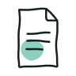

- Início
- Documentação
- Modelos

Modelos
5 ferramentas · Documentação
Folheto informativo e consentimento informado, livre e esclarecido para a colocação de DIU (cobre ou cobre e prata), com via para a utente e para o processo.
Miguel Henriques · v1.0Consentimento informado — DIU-L↗ separador novoFolheto informativo e consentimento informado, livre e esclarecido para a colocação de DIU com levonorgestrel, com via para a utente e para o processo.
Miguel Henriques · v1.0Consentimento informado — implante↗ separador novoFolheto informativo e consentimento informado, livre e esclarecido para a colocação de implante hormonal subcutâneo, com via para a utente e para o processo.
Miguel Henriques · v1.0
Manual de procedimentos↗ separador novoModelo para escrever procedimentos da unidade (objetivos, âmbito, siglas, responsabilidades, sequência lógica, indicadores, referências e assinaturas), com impressão e gravação em HTML.
Miguel Henriques · v1.0Modelo de ata↗ separador novoAgenda e ata de reunião: pontos de agenda, ata com texto formatado, tabelas, imagens e votações, presenças por grupo profissional, com impressão e gravação em HTML.
Miguel Henriques · v1.0